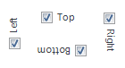
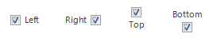
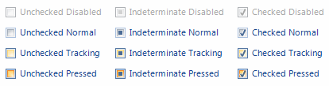

KryptonCheckBox
The KryptonCheckBox control is great way to present the user with a choice such as Yes/No or True/False. This control combines check box functionality with the styling features of the Krypton Toolkit. The user can cycle between three states of checked, indeterminate and unchecked by pressing the check box. Place code in the CheckStateChanged event handler to perform actions based on the checked state. The content of the control is contained in the Values property. You can define Text, ExtraText and Image details within the Values property.
Appearance
The control uses a label style for presenting the text and image associated with the check box. The LabelStyle property has a default value of NormalControl giving the same appearance as a KryptonLabel instance. If you place the check box control onto a Panel background then you are recommended to change the LabelStyle to NormalPanel so that the label has an appropriate contrasting appearance.
You can use the Orientation property to rotate the control. The default setting of Top shows the content in a left to right and top to bottom arrangement. Specify Bottom to have the control displayed upside down, Left to show the content rotated 90 degrees left and Right for 90 degrees rotated right. See figure 1 for examples.

Figure 1 – Orientation Property
To alter the relative location of the check box use the CheckPosition property. The default is Left and shows the check box on the left side of the control values. Alternatively use the Top, Bottom or Right values as shown in Figure 2.

Figure 2 – CheckPosition Property
Checked and CheckState
To define the checked state of the control you can use either the Checked or the CheckState properties. The Checked property is a boolean property that returns True when the CheckState is Checked, otherwise it returns False. If you have defined the ThreeState property to be False then the check box can only ever be in the checked or unchecked states and so the Checked property is the most appropriate for setting or getting the current checked state. If however you have enabled the use of the indeterminate state by setting ThreeState to be True then you should use the CheckState property for getting and setting the current state, as it allows you to specify the additional indeterminate setting.
You can hook into the CheckedChanged and CheckStateChanged events in order to be notified when these two property values have been updated.
ThreeState
This defaults to False and so when you first create a new instance of the check box control it will toggle between checked and unchecked. Set this property to True if you also require the indeterminate state.
AutoCheck
Normally you will want the keyboard mnemonic shortcut and the mouse to automatically cycle around the check box states. If instead you would like to disable this automatic behavior then set this property to False, but then you will need to handle the state changes yourself.
Two States
Only two possible states of Disabled and Normal are used by the check box control. In order to customize the appearance use the corresponding StateDisabled and StateNormal properties. Note that only the content characteristics can be modified as the check box never has a border or background.
To speed up the customization process an extra StateCommon property has been provided. The settings from this are used if no override has been defined for the state specific entry. Note that the specific state values always take precedence and so if you define the text font in StateNormal and StateCommon then the StateNormal value will be used whenever the control is in the Normal state. Only if the StateNormal value is not overridden will it look in StateCommon.
Focus Override
If the control currently has the focus then the OverrideFocus settings are applied. This can occur when the control is in the Normal state. By default the override only alters the appearance so that a focus rectangle is drawn around the content so that the user can see that the control currently has the focus.
Examples of Appearance
Figure 3 shows the appearance when using the Office 2007 - Blue palette with the default settings. You can see each of the different CheckState values and the appearance when disabled, normal, tracking or pressed down.

Figure 3 – CheckBox Appearance